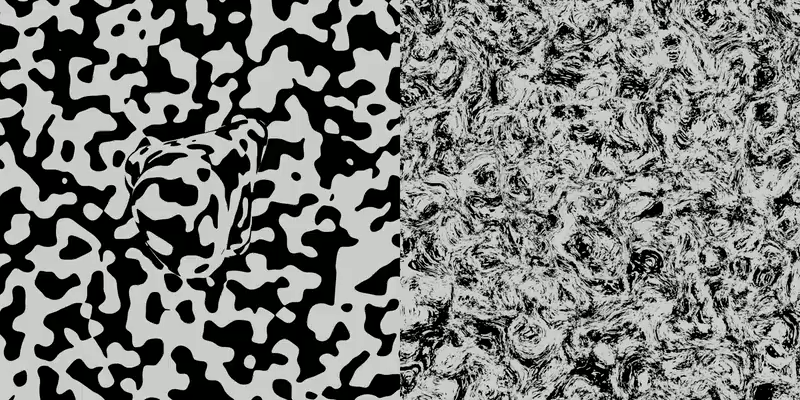

Research portfolio
Three levels of research
From neurons to computations to behavior — each links to a dedicated page that grows as the work does.

Brain-aligned vision models
3D vision in the brain
Identifying 3D processing in the brain from moving objects, and aligning deep video models to the brain.
Explore
Representation · Geometry
Predictive coding in scene understanding
How neural codes reshape moving inputs into straighter, more predictable trajectories — and where that idea now travels.
Explore
Behavior · VR psychophysics
Reading the mind through the hand
A VR platform that recovers 3D perception from how we grasp virtual objects.
Explore